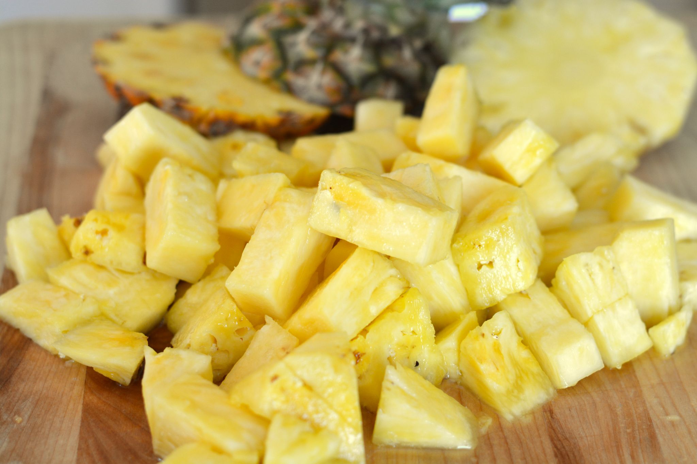
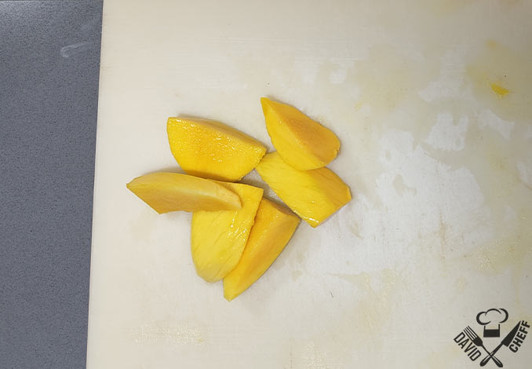
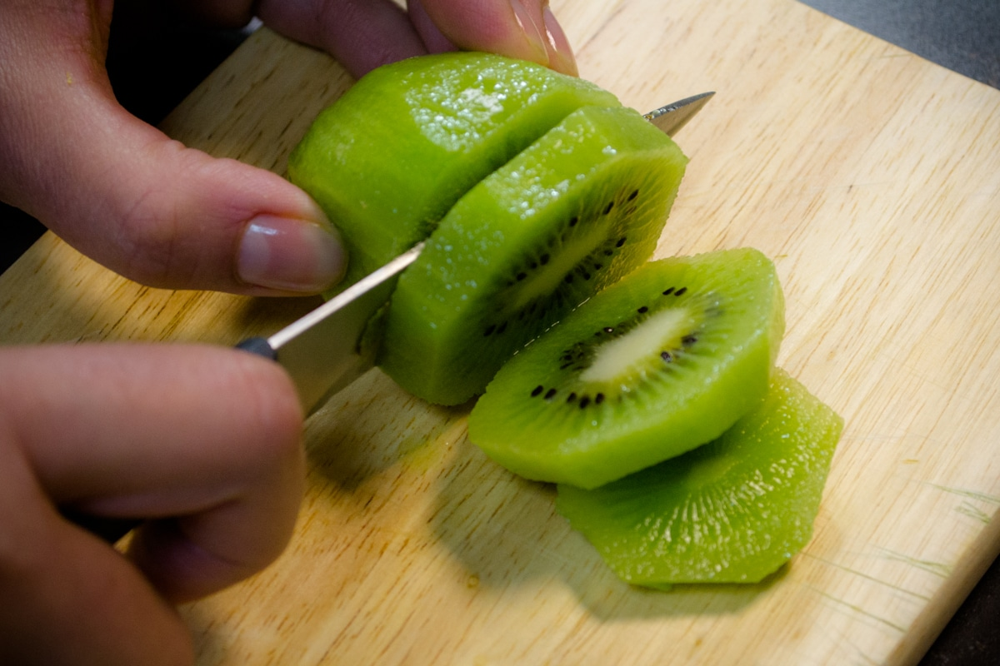
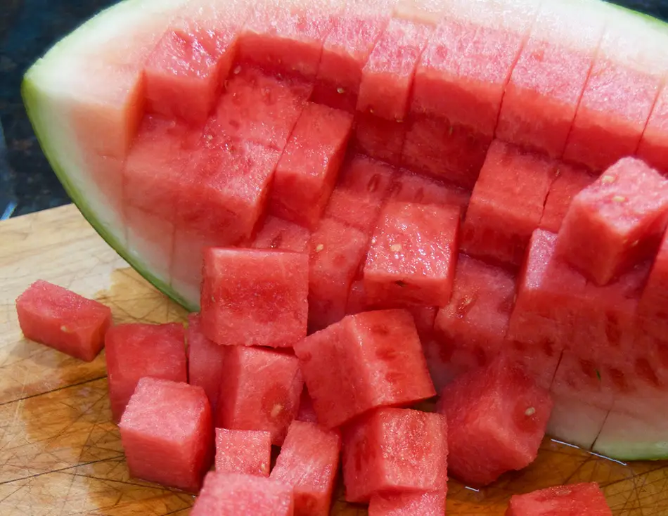

corta la piña por la mitad, corta la zona superior de hojas y la inferior y pélala con el cuchillo para quedarte solo con parte amarilla. Ahora pártela por la mitad y retírale la zona central que está más dura y no se come. Corta cada cuarto por la mitad y a continuación en rodajas, te quedarán como a mi con forma triangular.
pélalos con un cuchillo o un pelapatatas, ve cortando los trozos alrededor del hueso y córtalos más si han salido grandes.
lávalas, sécalas con papel de cocina, córtales el rabito verde y pártelas por la mitad o en cuartos, según su tamaño.

pela los kiwis con un cuchillo o un pelapatatas, después por la mitad y por último en rodajas.
corta un par de rodajas, retírales la cáscara y parte la pulpa en cubitos
